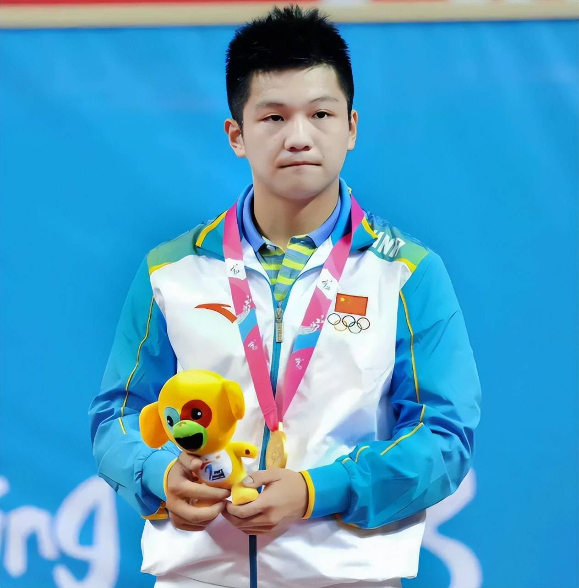

Honours · 03
荣誉成绩
“超级全满贯”不是形容词，而是一项可以逐项核对的技术指标：奥运会、世乒赛、世界杯、全运会、亚运会的单打冠军，缺一不可。
Key Numbers
四项可以核对的数据
数据据公开资料统计，统计口径为单打与团体世界冠军合计
1位
首位超级全满贯
集齐奥运会、世乒赛、世界杯、全运会、亚运会等顶级赛事单打冠军，乒坛此前仅有邓亚萍、马龙达成。
10位
国乒大满贯序列
巴黎奥运会男单夺冠后，成为国乒历史上第 10 位大满贯球员、第 3 位超级全满贯球员。
2862天
从首冠到奥运金牌
2016 年首个世界冠军，到 2024 年 8 月 4 日巴黎夺冠，中间整整八年。
2018年
首次世界第一
21 岁登上男单世界排名第一，此后长期保持在世界前三位置。
Major Titles
三大赛与其他重要单打冠军
| 赛事 | 年份 | 地点 / 说明 |
|---|---|---|
| 奥林匹克运动会 男单 | 2024 | 巴黎，完成大满贯与超级全满贯 |
| 世界乒乓球锦标赛 男单 | 2021 | 休斯敦，决赛 4:0 战胜莫雷加德 |
| 乒乓球世界杯 男单 | 2016 | 个人首个三大赛单打冠军，19 岁 |
| 全国运动会 男单 | 2021 / 2025 | 陕西、粤港澳两届夺冠，2025 年成功卫冕 |
| WTT 新加坡大满贯 男单 | 2022 | 首个 WTT 大满贯单打冠军 |
| 亚洲青年运动会 男单 | 2013 | 进入国家队一线视野的关键一役 |
| 青年奥林匹克运动会 男单 | 2014 | 完成青年赛事大满贯 |
Team & Awards
团体荣誉与个人奖项
- 2012世界青少年乒乓球锦标赛 男单、男双、男团 三冠首个世界级头衔
- 2018国际乒联年度最佳男运动员ITTF
- 2021东京奥运会 男团金牌、男单银牌首次奥运
- 2024釜山世乒赛 男团冠军并获 MVP（8 场全胜）团体赛
- 2026德国杯冠军并当选 MVP萨尔布吕肯
- 2026欧洲冠军联赛冠军萨尔布吕肯
- 2026德甲联赛冠军，并获评赛季最佳球员德国三冠王
- 2026入选福布斯中国最具影响力华人精英 100 人榜单体育类唯一乒乓球运动员

关于“金满贯”的叫法
媒体报道中常见“全满贯”“大满贯”“超级全满贯”“金满贯”几种说法，口径各不相同。较为通行的界定是：大满贯指奥运会、世乒赛、世界杯三大赛单打冠军全部收入；超级全满贯在此基础上再加亚运会、全运会等赛事单打冠军。本站采用后一种口径，并在文中注明依据。